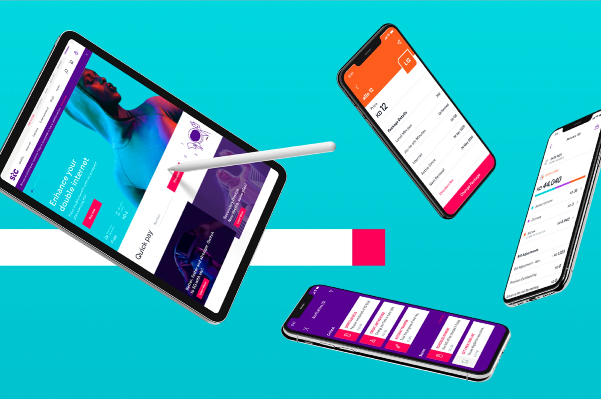

Norwegian Public Road - Traffic app Design System
UI/UX

STC – Selfcare App, Website & Kiosk
UI/UX

Odeabank - Investment & Banking MVP
UI/UX
Spray Collective
Installation

Album/Single Covers
Illustrations
Junk in an Infinite Loop
Projection Mapping

Locus – Brand Identity
Branding
Saptan Stories
Illustration
frog – Play
Interactive web
Moments on Earth
Website design